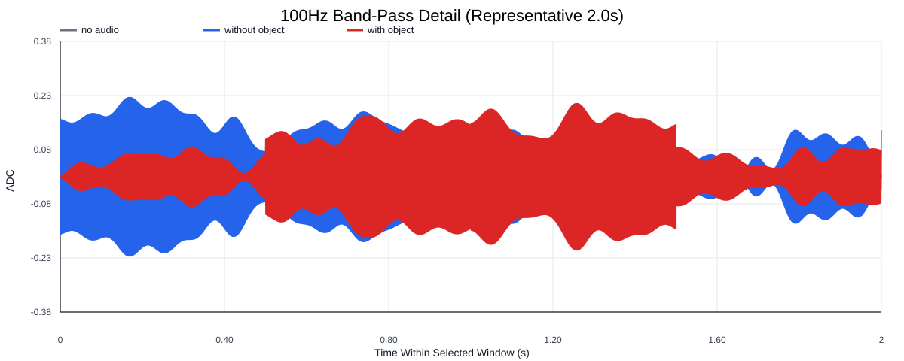
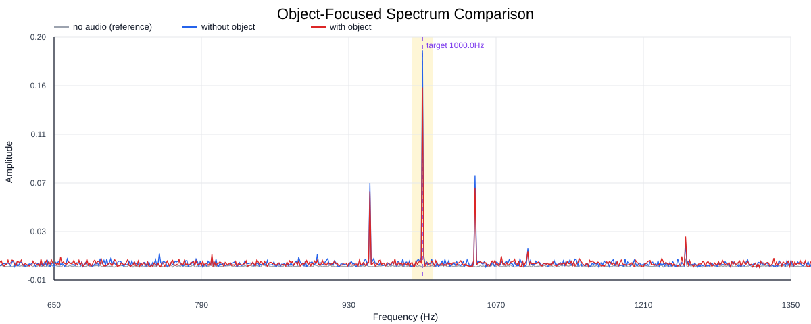
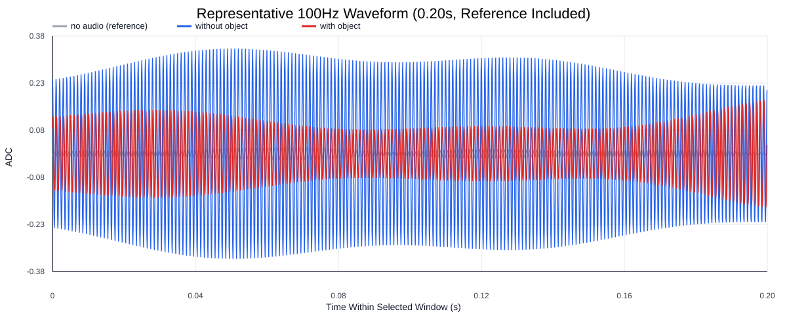
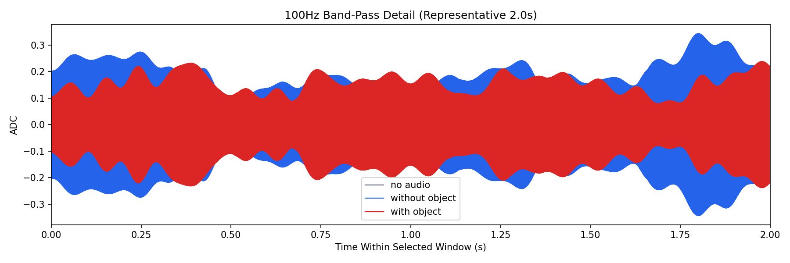
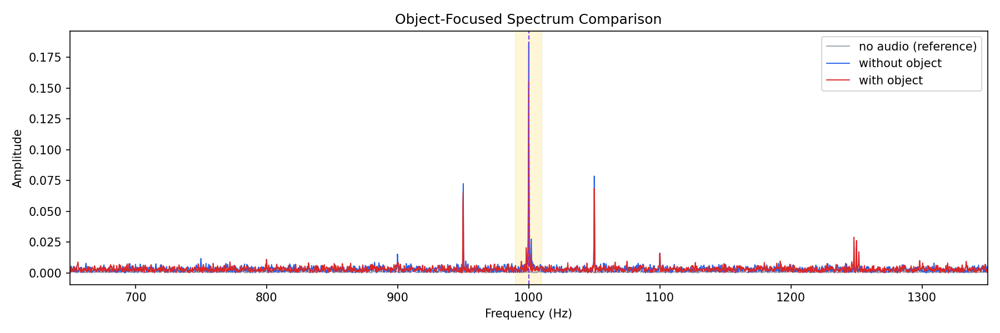
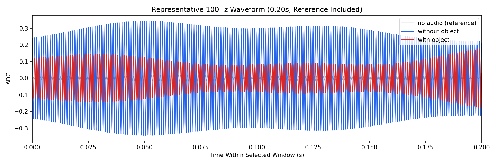

Background: F:\项目类文件夹\异物检测4.10\Data_Dual\frequency_sweep\1000Hz\repeat_01\raw\no_audio.csv
Without object: F:\项目类文件夹\异物检测4.10\Data_Dual\frequency_sweep\1000Hz\repeat_01\raw\without_object.csv
With object: F:\项目类文件夹\异物检测4.10\Data_Dual\frequency_sweep\1000Hz\repeat_01\raw\with_object.csv
| Metric | 无音频 | 100Hz无异物 | 100Hz有异物 | 无异物/无音频 | 有异物/无异物 | 有异物/无音频 |
|---|---|---|---|---|---|---|
| centered_rms | 0.098614 | 0.349258 | 0.347686 | 3.5416 | 0.9955 | 3.5257 |
| raw_target_amp | 0.000560 | 0.186987 | 0.154850 | 334.1726 | 0.8281 | 276.7387 |
| filtered_rms | 0.006213 | 0.143149 | 0.116384 | 23.0394 | 0.8130 | 18.7317 |
| filtered_target_amp | 0.000560 | 0.186987 | 0.154850 | 334.1727 | 0.8281 | 276.7387 |
| filtered_energy_ratio | 0.003970 | 0.167991 | 0.112051 | 42.3189 | 0.6670 | 28.2269 |
| window_filtered_target_amp_mean | 0.007346 | 0.194151 | 0.159151 | 26.4305 | 0.8197 | 21.6659 |
| window_filtered_target_amp_std | 0.004289 | 0.056642 | 0.041365 | 13.2049 | 0.7303 | 9.6433 |





